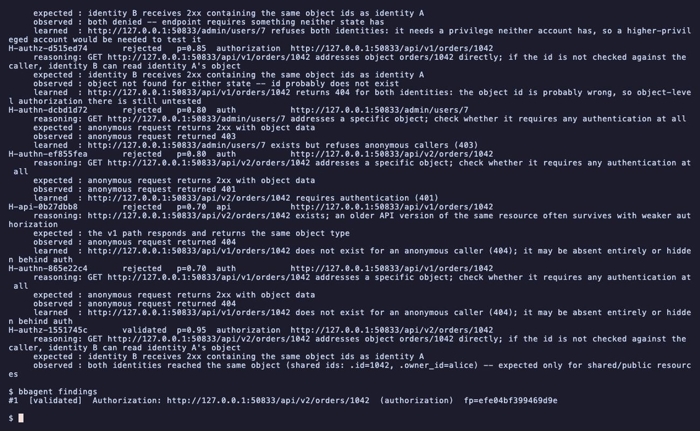

bbagent
A bug bounty research loop. It forms hypotheses, tests them with two researcher accounts, and only reports what it can reproduce.

Overview
bbagent is an authorized bug bounty research tool. The repo is the safe core: the parts that decide what's allowed, keep evidence honest, and produce a clean report. It doesn't attack anything on its own.
The whole design assumes one thing: a target is authorized only when the program's own scope says so.
How it works
Recon is the first step, not the whole job. The loop is a state machine: verify scope, run recon, model the application, generate hypotheses, investigate, validate, then learn from the result and go again.
- Scope engine: deterministic, no LLM. Out of scope always beats in scope, and anything unmatched is never auto-allowed.
- Two researcher accounts: authorization bugs get tested by checking whether one account can reach another account's data.
- Blockers: when the agent needs something from a human, like a second test account, that hypothesis parks and the rest of the research keeps going.
- Report: what was modeled, what was tested, what was rejected and why, and what's validated with recorded evidence.
Why it matters
A run with no findings and a full rejection list is still a real result. The point is to only report what can be reproduced.